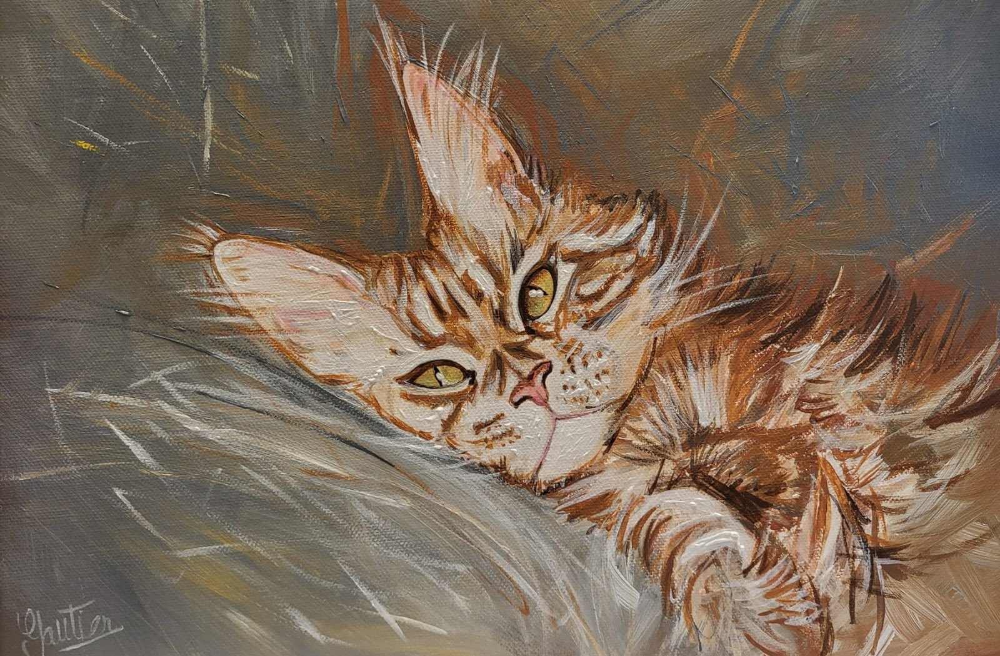
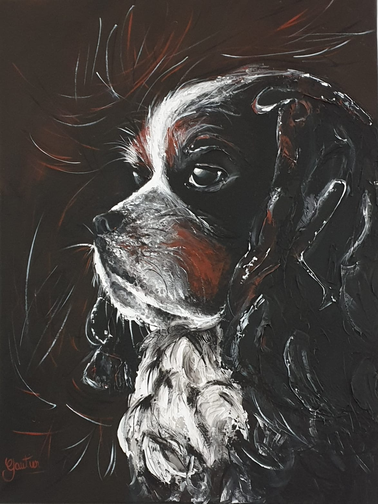
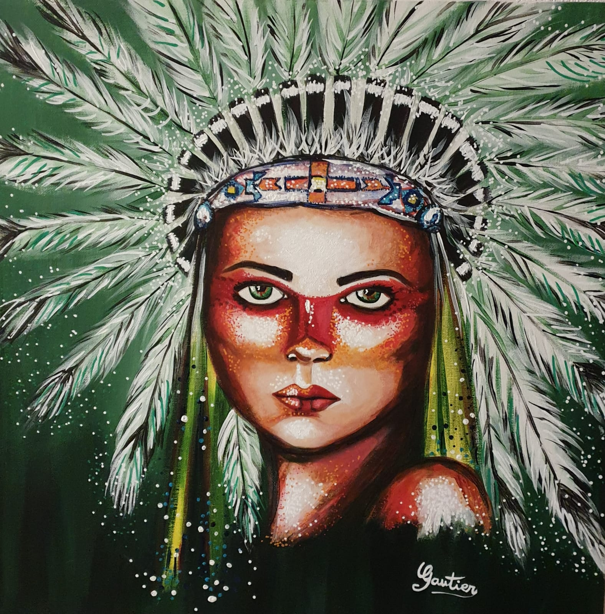
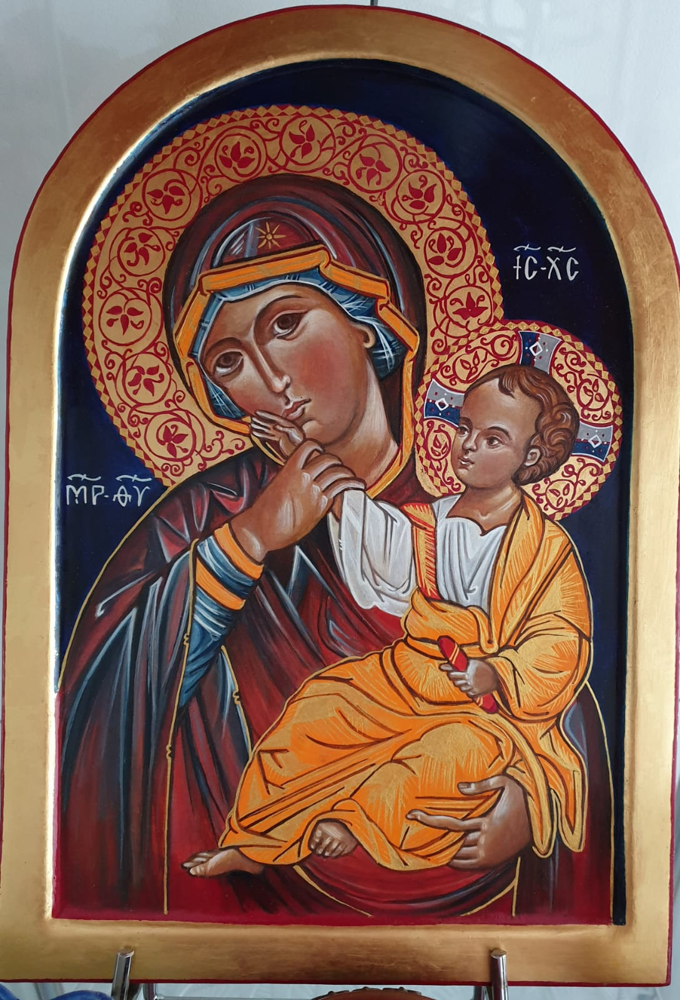

A propos
Découvrez l'univers artistique captivant de Gautier, une talentueuse artiste peintre passionnée depuis ses 12 ans.
Son amour pour l'art et la culture transparaît dans ses créations variées, allant de portraits expressifs à des représentations vibrantes d'animaux et d'icônes religieuses.
Explorez sa diversité artistique sur son site web.
Galerie

Animaux

Portraits

Icônes